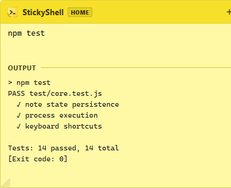
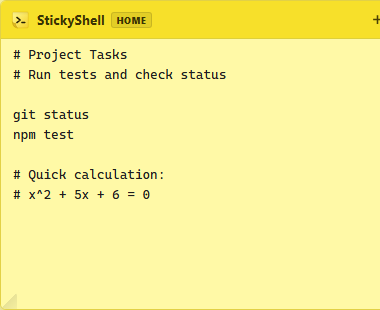
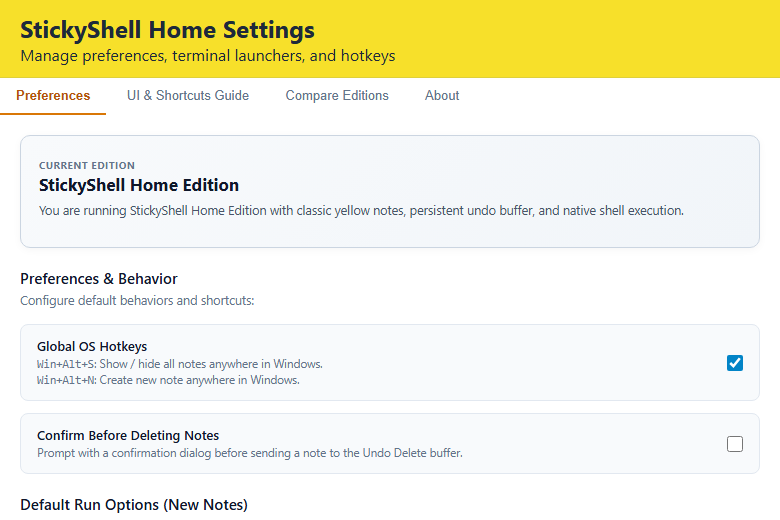

Desktop sticky notes with built-in command execution
A fast scratchpad for developers and power users. Write notes, execute shell commands inline or in a system console, and keep everything stored locally on your machine.

Designed for Developer Workflows
A focused utility built to execute commands and store notes without IDE overhead.
Dual Execution Modes
Run commands quietly in Inline Capture mode (Ctrl+Enter) with output rendered in an attached drawer, or pop open an external system terminal (Ctrl+Shift+Enter).
Persistent Undo Buffer
Accidentally closed a note? Press Ctrl+Z to restore deleted notes with complete state and history, preserved across application restarts.
Offline and Private
Zero telemetry, zero external network calls, and no accounts. Notes and settings remain on your local disk in standard JSON format.
Always on Top and Global Hotkeys
Pin notes to float above editors and browser windows. Toggle visibility instantly with Win+Alt+S or create a note anywhere with Win+Alt+N.
Markdown and Math Support
Write formatted notes, task checklists, and mathematical expressions with built-in instant KaTeX formula rendering.
Lightweight Footprint
Built with Tauri v2 and Rust. Starts quickly, consumes minimal memory, and avoids running heavy background browser processes.
Interface Walkthrough
Simple by default, powerful when executing tasks.

1. Note Scratchpad
Write notes, track quick tasks, and type shell commands in a familiar sticky note interface.
2. Inline Execution Drawer
Execute with Ctrl+Enter to inspect stdout, stderr, and exit status directly beneath the note.

3. Settings and Shell Options
Customize working directories, terminal launchers (CMD, PowerShell, Bash), and startup options.
Keyboard Shortcuts
Operate StickyShell quickly without touching your mouse.
| Shortcut | Action | Scope |
|---|---|---|
| Win + Alt + S | Toggle (Show / Hide) all open sticky notes | Global OS |
| Win + Alt + N | Spawn a new sticky note | Global OS |
| Ctrl + Enter | Execute command (Inline Capture Mode) | Active Note |
| Ctrl + Shift + Enter | Execute command (External System Console) | Active Note |
| Ctrl + Z | Undo delete (Restores closed note) | Active / Tray |
Download Packages
Available for Windows, macOS, and Linux.
| Platform | Format | Architecture | Download |
|---|---|---|---|
| Windows 10 / 11 | Setup (.exe) | 64-bit (x64) | Download .exe |
| Windows 10 / 11 | MSI Installer (.msi) | 64-bit (x64) | Download .msi |
| macOS 11+ | Disk Image (.dmg) | Universal (Apple Silicon & Intel) | Download .dmg |
| Linux | AppImage | 64-bit (x86_64) | Download .AppImage |
| Linux (Debian / Ubuntu) | Debian Package (.deb) | 64-bit (amd64) | Download .deb |
| Linux (Fedora / RHEL) | RPM Package (.rpm) | 64-bit (x86_64) | Download .rpm |